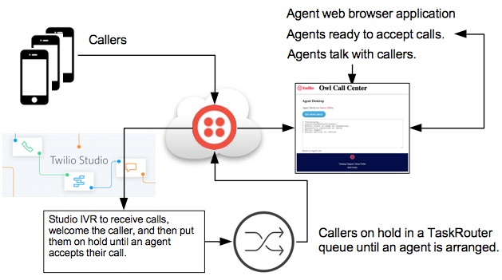

Agent Application
Agent list
Task list
Call Center Flow

Specifications
- A Twilio phone number is configured with an IVR.
- The IVR receives incoming callers, says a message, and adds the caller into a TaskRouter managed TaskQueue.
While in the queue, callers listen to music.
- There is a single TaskRouter Workspace:
- One TaskQueue
- One Workflow
- Worker agents
- Agent Client call Activities, for example: offline, idle (available), and busy.
- Agents connect to the Agent Application with their web browser and set their status activity to idle,
which means they are available to receive calls.
About the application:
- It can either be deployed to Heroku, run on a localhost computer, or any other computer which is PHP enabled.
- The application is a simplified version of the Twilio Call Center training course application.